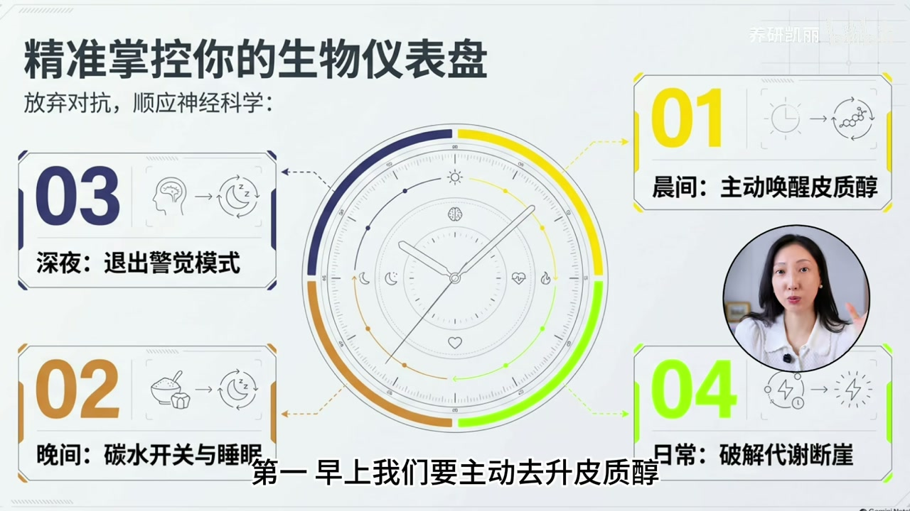
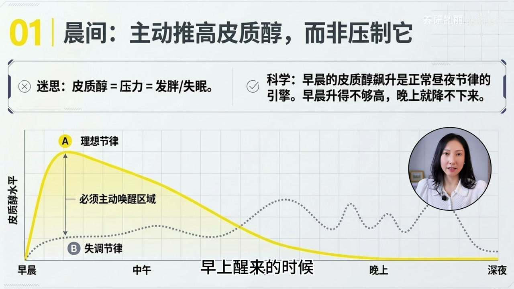
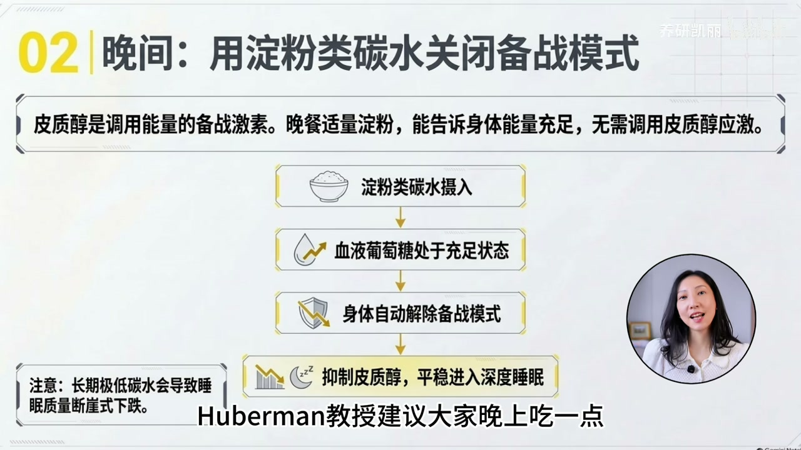
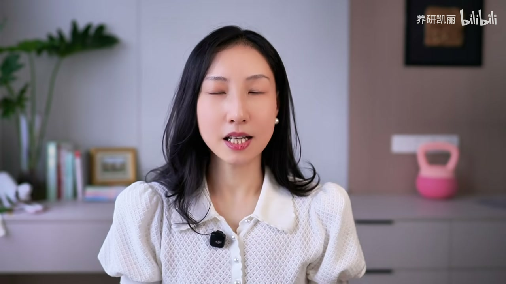
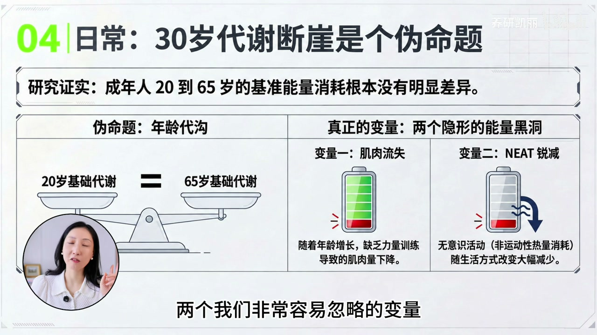
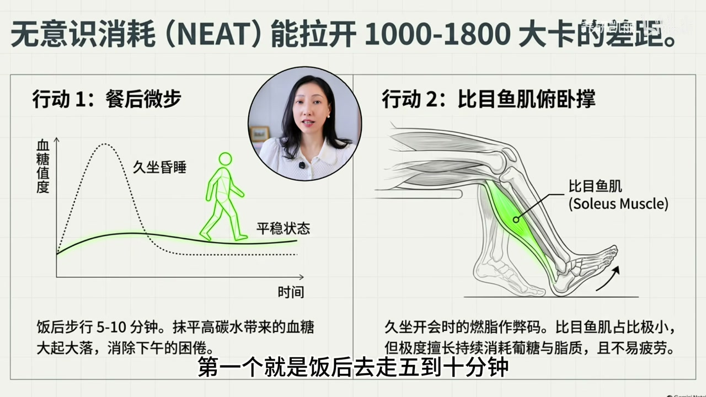
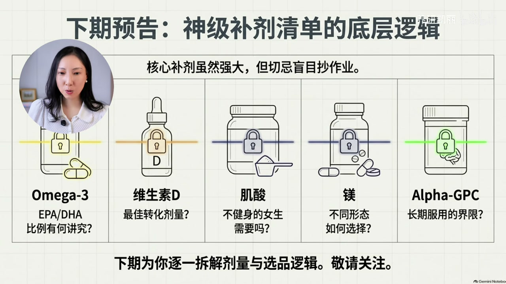

内容要点
凯莉精讲 Andrew Huberman 长访谈要点：①早晨要升高而非一味压制皮质醇（户外见光）；②晚餐适量淀粉碳水有助睡眠；③半夜醒可用极限眼球运动退出警觉；④「30岁代谢断崖」是伪命题，差在肌肉流失与 NEAT（非运动性活动产热）。文末提补剂清单但明确不建议盲目抄作业。口播繁体 ASR 已转简并校正「皮质醇 / 视交叉上核 / soleus」等。
知识结构
昼夜曲线：晨飙升、日夜渐降；见光启动觉醒并校准夜间睡眠；阴天也要出门。
皮质醇更像备战激素；晚餐有淀粉→血糖充足→少启动夜间应激；长期低碳+睡差者优先试。
闭眼极限左右上下+顺逆时针转2–3遍，配合延长呼气，帮助退出警觉入眠。
20–65岁基础能耗差不大；抓增肌与 NEAT；饭后走、soleus push-up；补剂下期拆。
别把皮质醇当绝对坏人：早上用阳光把它「升到位」，晚上用节律与碳水让它降下来；体重体感差更多来自肌肉与无意识活动，不是生日蛋糕。
00:00-01:50早晨：升皮质醇，而不是打压
开场四条颠覆：早上升皮质醇、晚上吃淀粉碳水、半夜眼球复位睡眠、30+代谢降低是伪命题。Huberman 长访谈被浓缩：皮质醇被网络妖魔化，但正常昼夜节律是晨间飙升、随后白天到晚上逐步下降。
关键：早晨升不够高，后面更难降下来。方法简单——起床喝水后尽快户外见自然光；视网膜特殊感光细胞把「天亮」信号传给视交叉上核（中央生物钟），启动觉醒并校准十几个小时后的睡眠。阴天也要出门：户外阴天光强仍远高于室内灯光。缺的不是「降皮质醇补剂」，而是早上用来升皮质醇的阳光。


01:50-05:20晚间碳水与半夜眼球技巧
第二条：晚餐适量淀粉类碳水。长期把碳水压很低的人睡眠常不好，与皮质醇扰动有关。纠正：Cortisol 更像「备战激素」——危险或上台前调动葡萄糖供脑与肌肉。夜间有一定淀粉→血糖相对充足→身体少再调皮质醇进应激。非人人每晚必吃；长期低碳且睡差者强烈建议晚餐保留适量淀粉。
第三条：半夜醒难回睡。Huberman 技巧——闭眼极限转眼球：极力右/左/上/下，再顺时针、逆时针各一圈，幅度做到略酸，整套 2–3 遍；可配合延长呼气的深呼吸。原理简述：特定眼球运动关联本体感觉，帮助大脑退出警觉监测状态从而重新入睡。


05:20-08:4230+代谢：肌肉、NEAT 与补剂边界
第四条：引用 Science 相关研究——成年人能量消耗 20–65 岁无明显断崖，「30岁代谢断崖」不成立。体感变胖差在两变量：肌肉含量下降，以及 spontaneous movement / NEAT（非运动性活动产热）。肌肉比例相同则代谢不必低于二十岁；要做增肌与保肌。拉开日常消耗的是接水、换房间、爬楼、家务、边走边打电话等 App 记不到的活动；极端情况下 NEAT 差异可达约 1000–1800 kcal。
增加 NEAT 两招：饭后走 5–10 分钟助处理餐后葡萄糖、减 energy crash；久坐时做 soleus push-up（比目鱼肌：前脚掌踩地反复抬脚跟）。片尾整理一日 Protocol 引流，并列出 Huberman 核心补剂方向（Omega-3、维生素D、肌酸、镁、α-GPC），但明确不建议直接抄作业，剂型剂量下期拆解。



完整转录（229段）
以下文本由 Whisper medium 模型自动转录，可能存在少量识别误差，已尽可能修正。
真的 所有想提升代谢 提高精力 改善睡眠的人
都一定要来听一下最新这期
Stanford顶流神经学家
Andrew Huberman的访台当中几个颠覆性的认知
我告诉你 即使你关注健康话题多年
甚至像我一样一直长期追踪前沿的抗衰研究
今天的内容也一样会颠覆你的认知
第一 早上我们要主动去伸皮质唇
而不是去控制皮质唇
第二 晚上要吃淀粉类的碳水
第三 半夜醒来如何用一个小技巧
就能快速回复深度睡眠
第四 所谓30加开始代谢降低根本就是个伪命题
实际上是很多人都忽视的两个隐形动作没做好
前几天 Stanford的著名神经学教授
Andrew Huberman做了一场最新的两个多小时的深度访谈
热腾腾出炉没几天
现在我看阅读量已经接近800万了
这是因为里面关于代谢 精力 睡眠 压力管理
这些满满的干货 真的非常值得一读
那凯利把两个多小时浓缩成10分钟精华中的精华
文莫还为你整理好了Andrew本人从早上睁开眼睛
到晚上睡觉24小时的Protocol
以及他在服用的健康补剂
用10分钟咱们抄顶流神经学家的作业
代谢 睡眠 精力咱们直接弯道超车
一个很颠覆大家三观的认知就是
我们要在早上升高皮质唇 而不是降低
近几年来皮质唇真的是在网路上被妖魔化了
什么脸肿 肚子胖 睡眠不好
反正任何有不好的事情就是跟它有关
那我们就要千方百计去降低皮质唇
但Huberman在这里跟我们讲了一个重要的区别
就是你记住这条曲线
早上醒来的时候皮质唇它是应该飙升的
随后在整个白天以及晚上是逐步下降的
这才是一个正常的昼夜节律
关键的点在于早晨如果你升的不够高
那白天剩下的时间和晚上它就不容易降下来
所以我们早上要去把它提升上去
是为了更好地在其余的时间当中管理好它
方法其实特别简单
凌晨本早上起来先喝水
喝完以后迅速的去户外接触日光
为什么一定要去见光呢
我们视网膜里面有一个很特殊的感光细胞
讨成自然光进入眼睛之后
就会把天亮的这个信号传递给视交叉上和
就是我们身体的中央生物中
从而帮助启动白天的觉醒状态
包括晨间正常的皮质唇上升
重点来了
这个晨间的光信号不但是告诉你白天来了
它还去校准了在十几个小时之后你要睡眠的时间
也就是说晚上睡不睡得好
其实从你早上睁开眼睛去看太阳光的时候就已经决定了
那Huberman建议即使是阴天也依然要出去
因为阴天户外的光照也比在室内打著灯要强的多的多
想想如果你每天早上是拉著窗帘起来
昏暗的房间里面刷半小时手机
戴上墨镜坐上车去出门上班
一整天都在室内
你缺的不是壹种降皮质唇的补剂
你缺的是早上用来伸皮质唇的阳光
第二Huberman教授建议大家晚上吃壹点
只要是减脂人群基本上盼都不敢盼的东西
碳水而且是淀粉类碳水
他说到成器把碳水压的很低的人
睡眠质量都不会很好
这背后也和皮质唇的扰动有关
Huberman教授这里纠正了大家的壹个观念
因为我们总是把Cortisol说成是个压力激素
因为压力是个坏东西所以它也是个坏东西
其实更确切的说Cortisol它更像壹个备战激素
它是为了去更好地应对壹些突发的事件
你就比如说你突然遇到危险的事情
或者你马上要登台演讲了
这个时候身体进入壹种备战状态
Cortisol就会迅速的把储存的葡萄糖和其他的能量给调用起来
供你的大脑和肌肉去使用
那如果当晚间你有壹定量的淀粉摄入之后
血液当中的葡萄糖就会在相对丰足的壹个状态
这个就等于告诉身体说
OK 我现在血管里已经有足够能量了
妳也不用去调动皮质唇去启动那个应激备战模式了
并不是说每个人每天晚上壹定得吃
但是如果妳长期低碳
而且妳睡眠质量又会比较差
那么真的强烈建议妳晚餐保留壹些适当的淀粉类碳水
第三神经学家半夜如果醒来以后
怎么快速让自己睡回去
这个技巧我亲测有效
很多人都有这种经历
半夜凌晨两三点起来以后
本来就是去上个厕所
结果躺回到床上以后突然
明天要做的事情
今天说错了壹句话全部都冒出来了
妳这个时候告诉自己赶紧睡
妳就是越睡不著
那Huberman教授就教大家壹个小技巧叫转动眼球
具体方法也是很简单的
我给大家演示壹下
闭上眼睛
眼球左右转
极力转
先极力往右看
再极力往左看
再极力往上看
再极力往下看
开始顺时针转壹圈
再逆时针转壹圈
就尽量要把运动幅度做到极致
妳就会觉得有点酸酸的拉扯感觉
这个整套动作就可以做两到三遍
我现在睁开来就觉得眼睛好明亮
像做了壹整套眼保健套壹样的感觉
它这个动作背后的原理是什么
这个就真的是撞在神经学家的枪口上面了
它是因为眼球的运动
是和妳的本体感觉相关联的
在远仿台里面有大量的非常晦涩的理论
我们简而言之说人话
通过闭眼状态下面特定的眼球的运动
这个就可以帮大脑去退出
它本来的那种警觉状态
就是大脑要有壹个自己本体
和周围世界相对关系的壹个监测状态
它就能够很好的去退出这个状态
那这样妳就可以进入睡眠了
明白吧
还可以配合上壹些呼吸
妳做完这套以后妳可以做壹些
这样的深呼吸把呼气延长放慢
所以如果大家半夜醒来睡不著
真的是马上可以去试壹下这个tips
最后壹个
所有30家的人数起耳朵听
我知道妳们壹直都说什么20岁怎么吃都不胖
30岁开始喝口水都容易胖
好像就是因为年龄到了
就没有办法
其实Huberman就提到了Science的壹个非常著名的研究
发现说成年人的能量消耗
从20岁到65岁其实都不会有明显差异的
也就是说并不存在所谓的什么30岁的代谢断牙这个事情
那为什么我们这真的是有很明显这个体感呢
其实差异就存在于两个我们非常容易忽略的变量
壹个是肌肉的含量
还有壹个是spontaneous movement 无意识的运动
首先说肌肉30岁之后
如果妳的肌肉比例是相同的状态下
那其实妳的代谢真的不会比20岁低的
问题就是30岁之后我们肌肉的流失量开始增加了
所以妳真正要做的第壹件重要的事情
就是要去做增肌和保留肌肉的锻炼
那第二点这个概念叫做Neat
Non-exercise activity thermogenesis
非运动性活动产热
我们总是以为真正去消耗热量的就是我们正儿八经
换好运动衣运动鞋
然后去gym或者去外面跑步这才叫运动
但是真正把人与人日常的消耗量拉开差距的
其实是那些妳无意识当中的活动
站起来接水杯
跑到另外壹个房间去fetch壹些东西
上下楼梯做家务
壹边走壹边打电话
不要坐著打电话
如果壹定要做的时候妳还可以换动壹些坐姿
这些看起来完全记录不到妳运动App当中的运动量
其实累积起来是可以形成非常大的消耗差异的
在极端情况下面
这种neat带来的消耗差异
在不同人身上可能有1000到1800大卡之多
那怎么增加这种无意识的活动量呢
其实Huber们介绍两个小技巧
第壹个就是饭后去走5到10分钟
因为饭后马上让大肌群持续壹些轻度的收缩
就可以帮助身体处理参后葡萄糖
而且对很多人来说
这一顿高碳水餐以后的血糖大起落带来的困倦
我们下午说的energy crash也会改善很多
第二呢
如果有很多久坐的场景
比如说我要开会
我要做PPT
我要坐飞机
我要在火车上
我根本不可能去随时随地运动
这个时候就可以默默的做壹个动作
叫做soleus push-up
比目于肌腹
我称我们在小腿后面
壹个深残的肌群叫做比目于肌
它的比重其实占全身的比例是很小的
但是它非常擅长持续工作
因为我们人类要去持续的去做步行跑步的动作
而且这块肌肉
它对于葡萄糖和芝芝的消耗是非常厉害的
坐在椅子上
前脚掌踩地
然后后脚跟抬起
反复的去做
这就是壹个比目于肌收缩的动作
所以哪怕坐著不动
也是可以很好的锻炼肌肉和消耗能量的
OK 最后我把Huberman
它在访谈当中的核心内容整理成壹天10条的Protocol
大家可以入群来拿
另外主持人还追问了壹个你们都很关心的问题
妳在吃什么补剂
那Huberman的核心补剂
有Omega3、维生素D、积酸、美以及αGPC
但是我并不推荐大家直接抄作业
那同样是美
到底用什么样的剂型会更好壹些
Omega3当中EPA和DH的比例有没有讲究
维生素D的剂量到底应该放在多少
这个壹直有很多人问我
积酸如果不健身要不要吃
这个问我的人超多
尤其是女生
还有αGPC是什么
是不是所有人都适合长期服用
所以下期我就会把补剂清单壹个壹个拆开揉碎了
跟大家去解释剂型、剂量和选品的逻辑
我是凯莉
我们下期见